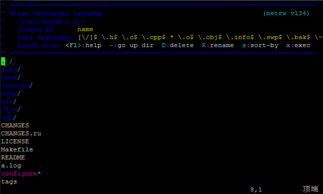
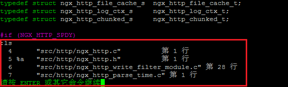
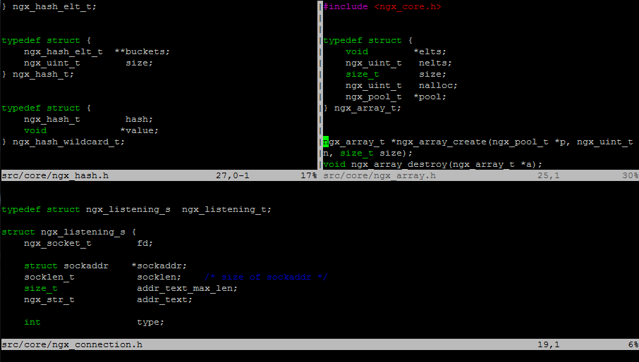
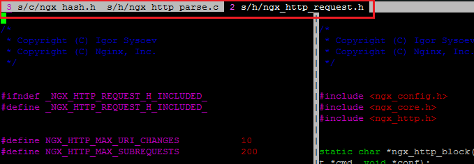
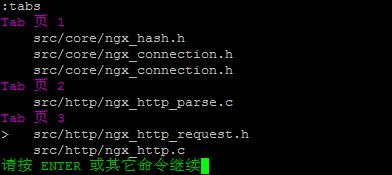
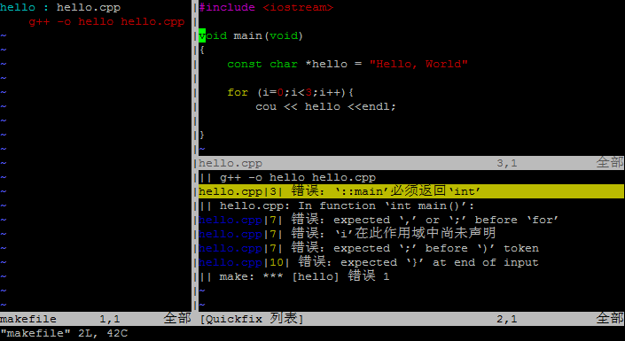
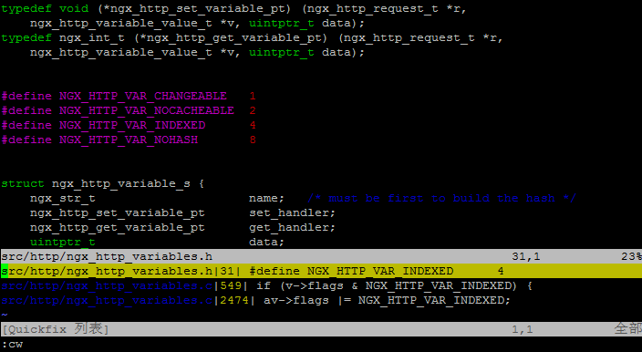
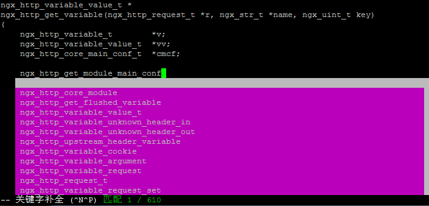
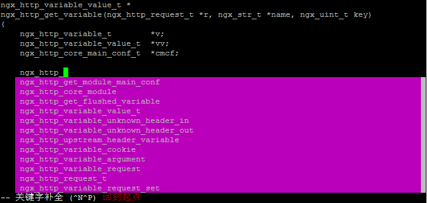

相信大家看过《简明Vim教程》也玩了《Vim大冒险》的游戏了，相信大家对Vim都有一个好的入门了。我在这里把我日常用Vim编程的一些技巧列出来给大家看看，希望对大家有用，另外，也是一个抛砖引玉的过程，也希望大家把你们的技巧跟贴一下，我会更新到这篇文章中。另外，这篇文章里的这些技巧全都是vim原生态的，不需要你安装什么插件。我的Vim的版本是7.2。
浏览代码¶
首先，我们先从浏览代码开始。有时候，我们需要看多个文件，所以，传统的做法是，我们开多个tty终端，每个tty里用Vim打开一个文件，然后来回切换。这很没有什么效率。我们希望在一个Vim里打开多个文件，甚至浏览程序目录。
浏览目录的命令很简单：（你也可以直接vim一个目录）
:E
注意，是大写。于是，你会看到下面这样的界面：

这个界面中，你可以用 j, k 键上下移动，然后回车，进入一个目录，或是找开一个文件。你可以看到上面有一堆命令：
- 【 – 】 到上级目录
- 【D】删除文件（大写）
- 【R】改文件名（大写）
- 【s】对文件排序（小写）
- 【x】执行文件
当然，打开的文件会把现有已打开的文件给冲掉——也就是说你只看到了一个文件。
如果你要改变当前浏览的目录，或是查看当前浏览的目录，你可以使用和shell一样的命令：
:cd
– 改变当前目录 :pwd – 查看当前目录
缓冲区¶
其实，你用:E 浏览打开的文件都没有被关闭，这些文件都在缓冲区中。你可以用下面的命令来查看缓冲区：
:ls
于是，在你的Vim下，你会看到如下界面：

你可以看到Vim打开了四个文件，编号是4，5，6，7，如果你要切换打开的文件，这个时候，你不要按回车（按了也没事，只不过按了就看不到:ls输出的buffer列表了），你可以使用下面的命令切换文件（buffer后面的4表示切到4号文件也就是src/http/ngx_http.c）：
:buffer 4
或是：
:buffer src/http/ngx_http.c
注意，
- 你可以像在Shell中输入命令按Tab键补全一样补全Vim的命令。
- 也可以用像gdb一样用最前面的几个字符，只要没有冲突。如：buff
你还可以动用如下命令，快速切换：
:bnext 缩写 :bn
:bprevious 缩写 :bp
:blast 缩写 :bl
:bfirst 缩写 :bf
上图中，我们还可以看到5有一个%a，这表示当前文件，相关的标记如下：
– （非活动的缓冲区）
a （当前被激活缓冲区）
h （隐藏的缓冲区）
% （当前的缓冲区）
（交换缓冲区）¶
= （只读缓冲区）
- （已经更改的缓冲区）
窗口分屏浏览¶
相信你在《Vim的窗口分屏》一文中，你已经知道了怎么拆分窗口了。其实，我更多的不是用拆分窗口的命令，而是用浏览文件的命令来分隔窗口。如：
把当前窗口上下分屏，并在下面进行目录浏览：
:He 全称为 :Hexplore （在下边分屏浏览目录）
如果你要在上面，你就在 :He后面加个 !，
:He! （在上分屏浏览目录）
如果你要左右分屏的话，你可以这样：
:Ve 全称为 :Vexplore （在左边分屏间浏览目录，要在右边则是 :Ve!）
下图是分别用:He 和 :Ve搞出来的同时看三个文件：

在分屏间的跳转和切换在《Vim的窗口分屏》一文中提过了：先按Ctrl + W，然后按方向键：h j k l
分屏同步移动¶
要让两个分屏中的文件同步移动，很简单，你需要到需要同步移动的两个屏中都输入如下命令（相当于使用“铁锁连环”）：
:set scb
如果你需要解开，那么就输入下面的命令：
:set scb!
注：set scb 是 set scrollbind 的简写。
Tab页浏览目录¶
分屏可能会让你不爽，你可能更喜欢像Chrome这样的分页式的浏览，那么你可以用下面的命令：
:Te 全称是 :Texplorer
下图中，你可以看到我用Te命令打开了三页，就在顶端我们可以可以看到有三页，其中第一页Tab上的数字3表示那一页有3个文件。

我们要在多个Tabe页中切换，在normal模式下，你可以使用下面三个按键（注意没有冒号）：
gt – 到下一个页
gT – 到前一个页
{i} gt – i是数字，到指定页，比如：5 gt 就是到第5页
你可以以使用 【:tabm {n}】来切换Tab页。
gvim应该是：Ctrl+PgDn 和 Ctrl+PgUp 来在各个页中切换。
如果你想看看你现在打开的窗口和Tab的情况，你可以使用下面的命令：
:tabs
于是你可以看到：

使用如下命令可以关闭tab：（当然，我更喜欢使用传统的:q, :wq来关闭）
:tabclose [i] – 如果后面指定了数字，那就关闭指定页，如果没有就关闭当前页
最后提一下，如果你在Shell命令行下，你可以使用 vim 的 -p 参数来用Tab页的方式打开多个文件，比如：
**vim -p cool.cpp shell.cpp haoel.cpp
vim -p *.cpp**
注：如果你想把buffer中的文件全转成tab的话，你可以使用下面的命令
:bufdo tab split
保存会话¶
如果你用Tab或Window打开了好些文件的文件，还设置了各种滚屏同步，或是行号……，那么，你可以用下面的命令来保存会话：（你有兴趣你可以看看你的 mysession.vim文件内容，也就是一个批处理文件）
:mksession ~/.mysession.vim
如果文件重复，vim默认会报错，如果你想强行写入的话，你可以在mksession后加! ：
:mksession! ~/.mysession.vim
于是下次，你可以这样打开这个会话：
vim -S ~/.mysession.vim
保存完会话后，你也没有必要一个一个Tab/Windows的去Close。你可以简单地使用：
:qa – 退出全部
:wqa -保存全部并退出全部
Quickfix¶
假如我们有一个hello.cpp文件和一个makefile，于是我们可以直接在vim下输入 :make ， 于是就可以make这个hello.cpp文件，如果出错了，我们需要按回车返回，这个时候，我们可以使用下面的命令来把出错显到在vim的分屏中：
:cw
于是，就会出现下面右边的那个样子：（是不是看上去和我一样很帅？）

上图中左边是我的makefile，右边是我的错误百出的源代码，右边下面是quickfix窗屏。你可以看到quickfix窗屏指向的第一个错误已经定位到我们相就错误的文件行上了。
你可以使用像浏览文件那样用j, k在quckfix窗屏中上下移动到相应的错误上然后按回车，然后就可以在上面的窗屏里定位到相应的源文件的代码行。但是，如果是这样的话， 你要定位下一条错误还得用Ctrl +W 回到quickfix屏中来然后重复来过。
你可以使用下面的命令而不用回到quickfix中来：
:cp 跳到上一个错误
:cn 跳到下一个错误
:cl 列出所有错误
:cc 显示错误详细信息
下面我们来看另一个quickfix的功能。
如果你用过vim的cscope插件，你就知道cscope可以用来查找相当的代码，但cscope需要事先生成一个数据库，对一些简单的查找，其实，我们用vim的grep命令就可以了，不需要专门为之生成数据库。vim的grep命令和shell的几乎一样。
我们来看个例子：
比如我们正在浏览nginx的代码，这时，我想看看哪里用到了nginx的NGX_HTTP_VAR_INDEXED宏。于是，我可以在vim里输入如下的命令：
:grep -r –include=”*.[ch]” NGX_HTTP_VAR_INDEXED src/
上面这个命令意思是递归查询src目录下所有的.c和.h文件，其中包括NGX_HTTP_VAR_INDEXED宏。然后，你就会看到vim到shell里去执行并找到了相关的文件，按回车返回vim后，别忘了用 【:cw 】把grep的输出取回来，于是我们就有下面的样子：

然后同上面一样，你可以用 j，k 键移动quickfix里的光标到相应的行，然后按回车定位文件，或是使用【:cn】或【:cp】来移动到定位。（这样，你会把多个文件打开到缓冲区，别忘了【:ls】来查看缓冲区）
你看，到这里，一个小小的IDE就这样产生了，而且，最帅的时，我们连一点插件都没有装，也没有在.vimrc文件中配置过什么。
关键字补全¶
我们还是坚持不用任何插件。我们来看看是怎么个自动补全的。
在insert模式下，我们可以按如下快捷键：
【Ctrl +N】 – 当你按下这它时，你会发现Vim就开始搜索你这个目录下的代码，搜索完成了就会出现一个下拉列表（居然是粉紫色的，真是丑死了）
下图是我输入了ngx_http_然后按ctrl+n出现的样子，它已经帮我补全了一个，但是我不想要这个。然后，在Vim的下方我们可以看到状态变成了“关键字补全”，然后后面有^N^P的提示，意思就是告诉你还有一个Ctrl+P.

【Ctrl + P】 – 接下来你可以按这个键，于是回到原点，然后你可以按上下光标键来选择相应的Word。
对于上面那个例子，我们按下了Ctrl+P后出现下面的这个样子。我们可以看到，光标回到了一开始我输入的位置，然后你可以干两件事，一个是继续输入（这可以帮助过滤关键词），另一个是用“光标键”上移或下移来选择下拉列表中的关键字，选好后回车，就补全了。

与此类似的，还有更多的补齐，都在Ctrl +X下面：
- Ctrl + X 和 Ctrl + D 宏定义补齐
- Ctrl + X 和 Ctrl + ] 是Tag 补齐
- Ctrl + X 和 Ctrl + F 是文件名 补齐
- Ctrl + X 和 Ctrl + I 也是关键词补齐，但是关键后会有个文件名，告诉你这个关键词在哪个文件中
- Ctrl + X 和 Ctrl +V 是表达式补齐
- Ctrl + X 和 Ctrl +L 这可以对整个行补齐，变态吧。
其它技巧¶
字符相关¶
【guu 】 – 把一行的文字变成全小写。或是【Vu】
【gUU】 – 把一行的文件变成全大写。或是【VU】
按【v】键进入选择模式，然后移动光标选择你要的文本，按【u】转小写，按【U】转大写
【ga】 – 查看光标处字符的ascii码
【g8】 – 查看光标处字符的utf-8编码
【gf】 – 打开光标处所指的文件 （这个命令在打到#include头文件时挺好用的，当然，仅限于有路径的）
【*】或【#】在当前文件中搜索当前光标的单词
缩进相关¶
【>>】向右给它进当前行 【<<】向左缩进当前行
【=】 – 缩进当前行 （和上面不一样的是，它会对齐缩进）
【=%】 – 把光标位置移到语句块的括号上，然后按=%，缩进整个语句块（%是括号匹配）
【G=gg】 或是 【gg=G】 – 缩进整个文件（G是到文件结尾，gg是到文件开头）
复制粘贴相关¶
按【v】 键进入选择模式，然后按h,j,k,l移动光标，选择文本，然后按 【y】 进行复制，按 【p】 进行粘贴。
【dd】剪切一行（前面加个数字可以剪切n行），【p】粘贴
【yy】复制一行（前面加个数字可以复制n行），【p】粘贴
光标移动相关¶
【Ctrl + O】向后回退你的光标移动
【Ctrl + I 】向前追赶你的光标移动
这两个快捷键很有用，可以在Tab页和Windows中向前和向后trace你的光标键，这也方便你跳转光标。
读取Shell命令相关¶
【:r!date】 插入日期
上面这个命令，:r 是:read的缩写，!是表明要运行一个shell命令，意思是我要把shell命令的输出读到vim里来。
vim的终级插件¶
CentOS下：yum erase emacs
Ubuntu下：apt-get remove emacs
对了，以前本站也有一篇小短文《如何在vim中得到你最喜爱的IDE特性》你也可以看看。
（:wq）
（转载本站文章请注明作者和出处 酷 壳 – CoolShell ，请勿用于任何商业用途）